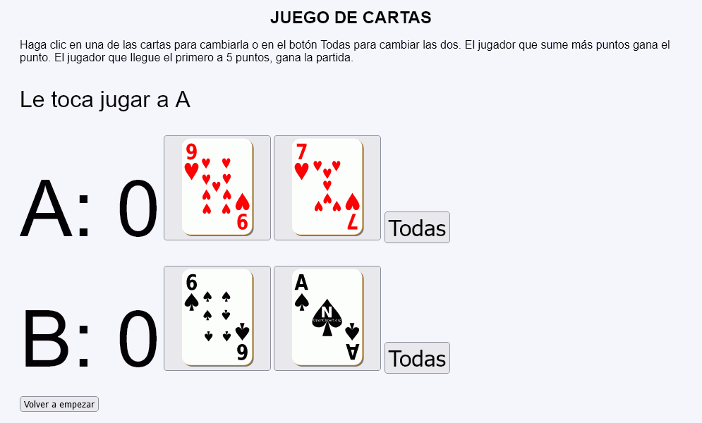
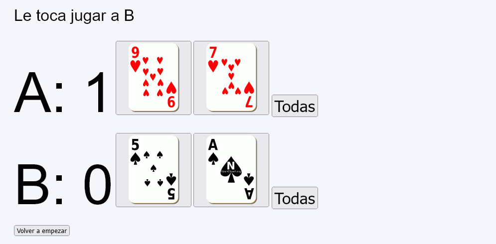
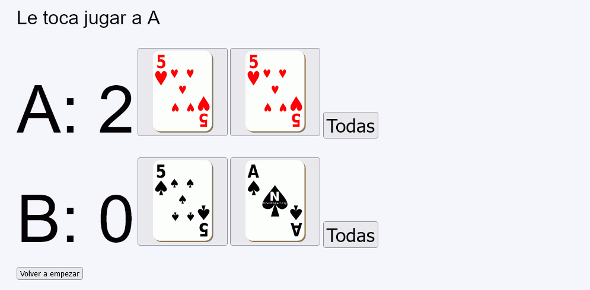
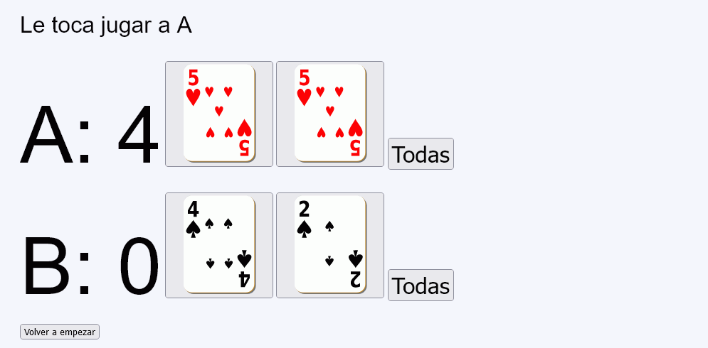
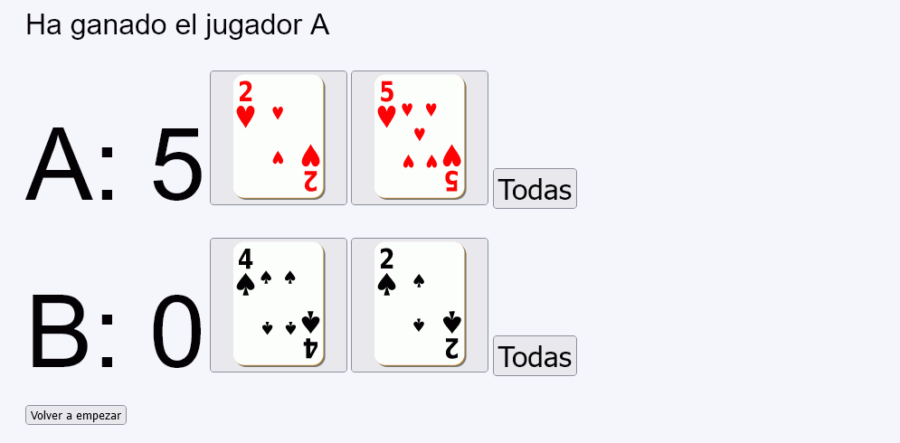

En este ejercicio se debe crear un programa que simule un juego de cartas para dos jugadores.





<p style="font-size: 2em">Le toca jugar a A</p>
<p>
<span style="font-size: 7em">A: 0</span>
<button type="submit" name="accion" value="A1">
<img src="img/cartas/c9.svg" alt="9" width="140" height="140" />
</button>
<button type="submit" name="accion" value="A2">
<img src="img/cartas/c5.svg" alt="5" width="140" height="140" />
</button>
<button type="submit" name="accion" value="A" style="font-size: 2em">Todas</button>
</p>
<p>
<span style="font-size: 7em">B: 0</span>
<button type="submit" name="accion" value="B1">
<img src="img/cartas/p10.svg" alt="10" width="140" height="140" />
</button>
<button type="submit" name="accion" value="B2">
<img src="img/cartas/p4.svg" alt="4" width="140" height="140" />
</button>
<button type="submit" name="accion" value="B" style="font-size: 2em">Todas</button>
</p>